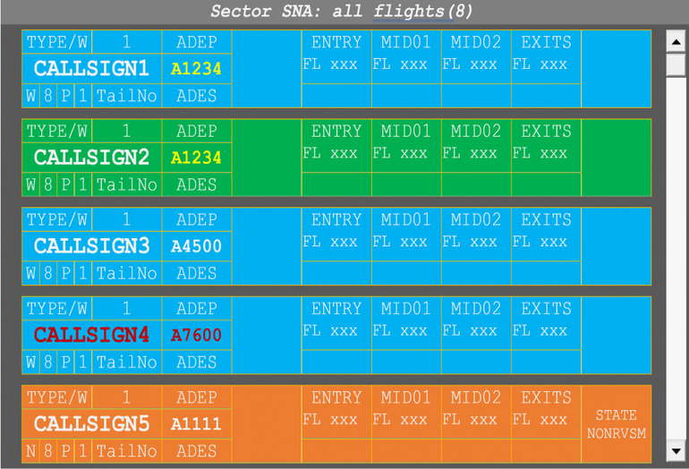
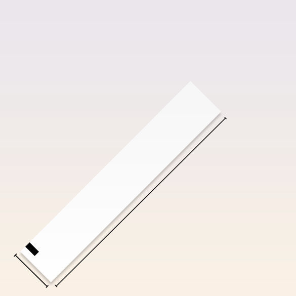

Le Strips
Le Strisce Progresso Volo, progetto ideato e creato da Fabiano Mamo.
INDICE
INTRODUZIONE
Introduzione e Funzione Operativa
Le strisce progresso volo, chiamate comunemente "STRIP", sono utilizzate per registrare e monitorare i dati relativi a un volo in corso. Inizialmente, erano il principale strumento per i controllori di volo, necessari per gestire le separazioni tra i velivoli, sia nel controllo d'area che nell'approccio procedurale. Con il passare del tempo e l'evoluzione della tecnologia, il loro ruolo è cambiato, diventando un semplice supporto ai sistemi radar e, infine, sostituito dalle strisce elettroniche.Per garantire una gestione sicura ed efficiente del traffico, l'uso delle strisce deve rispettare tre principi fondamentali:
- Standardizzazione dei simboli
- Tempestività nell'aggiornamento dei dati
- Chiarezza nella compilazione
STRUTTURA
Struttura e Compilazione
Le strisce hanno dimensioni standard di circa 21 cm x 2,5 cm, e sono suddivise in varie sezioni, ognuna delle quali è destinata a un'informazione specifica. Questi includono dettagli come:
- Codice del volo
- Tipo di aeromobile
- Livello di volo
- Velocità, rotta e punti di riporto
- Autorizzazioni di volo
Le strisce progresso volo (STRIPs) devono essere preparate prima di ricevere il piano di volo e devono restare operative fino alla fine del servizio ATS. Possono essere modificate a livello locale, ma le modifiche devono essere chiare, codificate e riportate nelle IPI per evitare confusioni. La compilazione deve essere chiara, con inchiostro nero o blu e caratteri maiuscoli. I numeri "0" devono essere barrati (Ø) per non confonderli con la "O", e la "S" deve essere sottolineata per distinguerla dal numero "5". Se necessario, si aggiunge una nuova striscia e le correzioni devono essere visibili, non cancellate. È fondamentale trascrivere i dati appena ricevuti e annotare subito le autorizzazioni e istruzioni per evitare dimenticanze.
TIPOLOGIE
Codifica dei Colori e Tipologie
In molti paesi, inclusa l'Italia, le strisce sono codificate con colori distintivi per facilitare l'immediata identificazione del tipo di traffico. I colori più comuni includono:
- Mod. B (Bianco):per aeromobili in partenza [VFR/IFR]
- Mod. A (Giallo):per gli arrivi, servizio Di APP,volo Nel Servizio Di Regione [VFR/IFR]
- Mod. C (Viola/Rosa):per il traffico locale [VFR/IFR]
Questa distinzione visiva consente ai controllori di identificare facilmente la situazione e la priorità di ogni volo, soprattutto in scenari con traffico intenso.

EVOLUZIONE
Evoluzione: Dalla Carta all'Elettronica
Con l'introduzione della tecnologia radar avanzata e dei sistemi automatizzati, le strisce hanno evoluto il loro formato, passando dalla carta alla versione elettronica. Oggi, le strisce digitali sono visibili sui monitor dei controllori e si aggiornano automaticamente, riducendo al minimo gli errori umani e migliorando la gestione del traffico aereo. Nonostante ciò, molte torri di controllo continuano ad utilizzare il formato cartaceo, soprattutto in situazioni procedurali dove è fondamentale avere un backup tangibile che non dipenda da sistemi elettronici.
SIGNIFICATI
Significato Operativo e Criticità
Le strisce non sono solo uno strumento di lavoro, ma anche un elemento chiave per la sicurezza del traffico aereo. Esse permettono di:
- Monitorare costantemente il traffico e prevenire conflitti
- Facilitare il passaggio di informazioni tra i controllori di volo
- Garantire una visione chiara e dettagliata della situazione, utile in caso di incidenti
Tuttavia, l'efficacia delle strisce dipende dalla precisione e dalla velocità con cui vengono aggiornate. Un errore nell'annotazione o un ritardo nel modificare le informazioni può avere gravi conseguenze.
SIMBOLISMI
Simboli e Abbreviazioni
La compilazione delle strisce avviene utilizzando simboli e abbreviazioni standardizzate, secondo le direttive ICAO, che permettono di rappresentare informazioni complesse in modo rapido e comprensibile. Alcuni esempi di simboli includono le frecce per indicare cambi di rotta, i cerchi per segnare autorizzazioni e i triangoli per i punti di riporto. Questo sistema di simboli facilita la comunicazione tra i controllori e garantisce che le informazioni siano chiare anche in situazioni di alta pressione.

ESEMPI PRATICI

FONTI
ENAV S. p. A. ACADEMY – ANS TRAINING
- Definizione base
- Distinzione tra formato cartaceo e digitale
- Contenuto della strip
- Uso operativo
- Importanza nel coordinamento
IBN Editore
- Approfondimento vari
- Funzioni operative della strip
- Interazioni con altri sistemi
- Cenni sull’organizzazione del traffico aereo
ENAV
- Sistema TWR EFPS
- Automazione e precisione
- Interfaccia grafica avanzata
- Supporto decisionale
- Progetto italiano di riferimento
GLOSSARIO
- Operazioni al suolo ed in circuito
- Volo in rotta
- Avvicinamento strumentale
- Radar
Approfondimenti

1. Differenze tra grandi e piccoli aeroporti
Nei grandi aeroporti le strisce sono spesso elettroniche e integrate nei sistemi radar, mentre nei piccoli scali si usa ancora il formato cartaceo per garantire operatività anche in assenza di strumenti automatizzati.
2. Errori comuni nella gestione
I problemi più frequenti riguardano dati non aggiornati o simboli ambigui. Anche piccoli errori possono compromettere la sicurezza operativa, specialmente in ambienti ad alta intensità di traffico.
3. Esempio pratico di compilazione
Un volo come AZ123, tipo A320, livello 310 e rotta via LUNAK-TULSO, verrà trascritto riportando chiaramente tutti i dati essenziali, usando abbreviazioni standard e simboli corretti.
4. Integrazione con altri sistemi
Le STRIP elettroniche si aggiornano in automatico in base ai dati radar e dei piani di volo, migliorando la coerenza tra ciò che il controllore vede e la situazione reale del traffico.
5. Evoluzione futura
Si va verso un uso sempre più diffuso delle STRIP digitali, con sistemi predittivi e intelligenza artificiale per supportare le decisioni dei controllori, senza però rinunciare alla ridondanza offerta dalla versione cartacea.